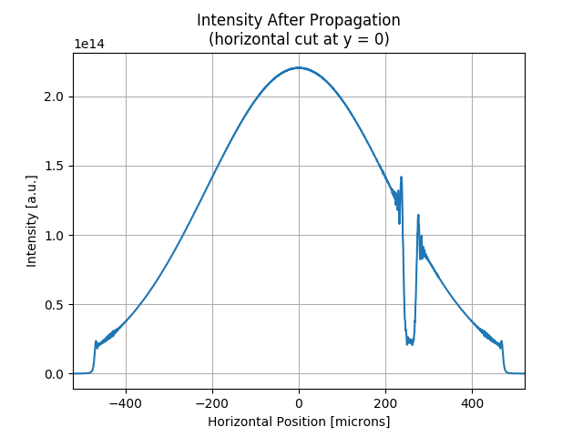
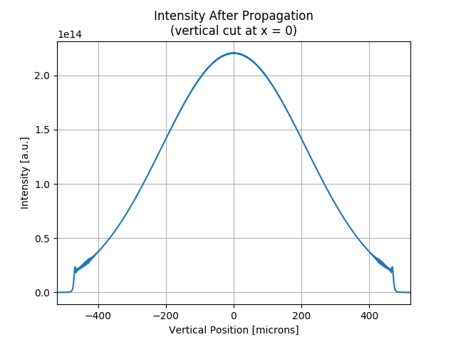

Note
Click here to download the full example code
SRW Example #7¶
Problem¶
Simulating propagation of a Gaussian X-ray beam through a simple optical scheme containing CRL
Example Solution¶

- 
- 

Out:
SRWLIB Python Example # 7:
Simulating propagation of a Gaussian X-ray beam through a simple optical scheme containing CRL
Setting-up Perfect CRL...
Optical Element Setup: CRL Focal Length: 9.4032283268808 m
done
Setting-up CRL Distorted by "voids" in volume (takes time)...
Optical Element Setup: CRL Focal Length: 9.4032283268808 m
done
Propagating Wavefront (through Distorted CRL and short Drift)...done
Saving resulting Intensity and Phase data to files...done
Propagating Wavefront (through Distorted CRL and Drift to waist)...done
Saving resulting Intensity and Phase data to files...done
Propagating Wavefront (through Perfect CRL and Drift to waist)...done
Saving resulting data to files...done
Plotting the results (blocks script execution; close any graph windows to proceed) ... done
from __future__ import print_function #Python 2.7 compatibility
from srwpy.srwlib import *
from srwpy.uti_plot import * #required for plotting
import os
import random
import copy
print('SRWLIB Python Example # 7:')
print('Simulating propagation of a Gaussian X-ray beam through a simple optical scheme containing CRL')
#**********************Input Parameters and structures:
strDataFolderName = 'data_example_07' #data sub-folder name
strIntOutFileName1 = 'ex07_res_int_in.dat' #file name for output SR intensity data
strPhOutFileName1 = 'ex07_res_ph_in.dat' #file name for output SR phase data
strIntPropOutFileName1 = 'ex07_res_int_dist_crl_p1.dat' #file name for output SR intensity data
strPhPropOutFileName1 = 'ex07_res_ph_dist_crl_p1.dat' #file name for output SR phase data
strIntPropOutFileName2 = 'ex07_res_int_dist_crl_p2.dat' #file name for output SR intensity data
strPhPropOutFileName2 = 'ex07_res_ph_dist_crl_p2.dat' #file name for output SR phase data
strIntPropOutFileName3 = 'ex07_res_int_perf_crl_p2.dat' #file name for output SR intensity data
strPhPropOutFileName3 = 'ex07_res_ph_perf_crl_p2.dat' #file name for output SR phase data
strOpPathOutFileName1 = 'ex07_res_opt_path_dif_dist_crl.dat' #file name for output SR intensity data
strOpPathOutFileName2 = 'ex07_res_opt_path_dif_perf_crl.dat' #file name for output SR intensity data
GsnBm = SRWLGsnBm() #Gaussian Beam structure (just parameters)
GsnBm.x = 0 #Transverse Coordinates of Gaussian Beam Center at Waist [m]
GsnBm.y = 0
GsnBm.z = 0 #Longitudinal Coordinate of Waist [m]
GsnBm.xp = 0 #Average Angles of Gaussian Beam at Waist [rad]
GsnBm.yp = 0
GsnBm.avgPhotEn = 12400 #5000 #Photon Energy [eV]
GsnBm.pulseEn = 0.001 #Energy per Pulse [J] - to be corrected
GsnBm.repRate = 1 #Rep. Rate [Hz] - to be corrected
GsnBm.polar = 1 #1- linear hoirizontal
GsnBm.sigX = 23e-06/2.35 #Horiz. RMS size at Waist [m]
GsnBm.sigY = GsnBm.sigX #Vert. RMS size at Waist [m]
GsnBm.sigT = 10e-15 #Pulse duration [s] (not used?)
GsnBm.mx = 0 #Transverse Gauss-Hermite Mode Orders
GsnBm.my = 0
wfr = SRWLWfr() #Initial Electric Field Wavefront
wfr.allocate(1, 100, 100) #Numbers of points vs Photon Energy (1), Horizontal and Vertical Positions (dummy)
wfr.mesh.zStart = 300 #Longitudinal Position [m] at which Electric Field has to be calculated, i.e. the position of the first optical element
wfr.mesh.eStart = GsnBm.avgPhotEn #Initial Photon Energy [eV]
wfr.mesh.eFin = GsnBm.avgPhotEn #Final Photon Energy [eV]
firstHorAp = 1.e-03 #First Aperture [m]
firstVertAp = 1.e-03 #[m]
wfr.mesh.xStart = -0.5*firstHorAp #Initial Horizontal Position [m]
wfr.mesh.xFin = 0.5*firstHorAp #Final Horizontal Position [m]
wfr.mesh.yStart = -0.5*firstVertAp #Initial Vertical Position [m]
wfr.mesh.yFin = 0.5*firstVertAp #Final Vertical Position [m]
wfr.partBeam.partStatMom1.x = GsnBm.x #Some information about the source in the Wavefront structure
wfr.partBeam.partStatMom1.y = GsnBm.y
wfr.partBeam.partStatMom1.z = GsnBm.z
wfr.partBeam.partStatMom1.xp = GsnBm.xp
wfr.partBeam.partStatMom1.yp = GsnBm.yp
sampFactNxNyForProp = 5 #sampling factor for adjusting nx, ny (effective if > 0)
arPrecPar = [sampFactNxNyForProp]
#**********************Calculating Initial Wavefront and extracting Intensity:
srwl.CalcElecFieldGaussian(wfr, GsnBm, arPrecPar)
arI0 = array('f', [0]*wfr.mesh.nx*wfr.mesh.ny) #"flat" array to take 2D intensity data
srwl.CalcIntFromElecField(arI0, wfr, 6, 0, 3, wfr.mesh.eStart, 0, 0) #extracts intensity
srwl_uti_save_intens_ascii(arI0, wfr.mesh, os.path.join(os.getcwd(), strDataFolderName, strIntOutFileName1), 0)
arI0x = array('f', [0]*wfr.mesh.nx) #array to take 1D intensity data
srwl.CalcIntFromElecField(arI0x, wfr, 6, 0, 1, wfr.mesh.eStart, 0, 0) #extracts intensity
arP0 = array('d', [0]*wfr.mesh.nx*wfr.mesh.ny) #"flat" array to take 2D phase data (note it should be 'd')
srwl.CalcIntFromElecField(arP0, wfr, 0, 4, 3, wfr.mesh.eStart, 0, 0) #extracts radiation phase
srwl_uti_save_intens_ascii(arP0, wfr.mesh, os.path.join(os.getcwd(), strDataFolderName, strPhOutFileName1), 0, ['', 'Horizontal Position', 'Vertical Position', 'Phase'], _arUnits=['', 'm', 'm', 'rad'])
mesh0 = deepcopy(wfr.mesh)
#***********Optical Elements
delta = 2.21555115e-06 #Be @ 12400 eV #1.3657359E-05 #Be @ 5000 eV
attenLen = 15453.7e-06 #[m] #1268.65e-06
diamCRL = 1.e-03 #CRL diameter
rMinCRL = 250e-06 #CRL radius at the tip of parabola [m]
nCRL = 6 #number of lenses
wallThickCRL = 50e-06 #CRL wall thickness [m]
opCRLperf = 1 #set to 1 if simulation of perfect CRL is required, otherwise set to None
opCRLdist = 1 #None #set to 1 if simulation of distorted CRL is required, otherwise set to None
opPathDifCRL = None
opPathDifCRLx = None
opPathDifCRLy = None
opMeshCRL = None
#Generating a perfect 2D parabolic CRL:
if(opCRLperf != None):
print('Setting-up Perfect CRL...')
opCRLperf = srwl_opt_setup_CRL(3, delta, attenLen, 1, diamCRL, diamCRL, rMinCRL, nCRL, wallThickCRL, 0, 0)
print('done')
#Extracting transmission data characteristic for subsequent plotting and saving it to a file
opPathDifCRL = opCRLperf.get_data(3, 3)
srwl_uti_save_intens_ascii(opPathDifCRL, opCRLperf.mesh, os.path.join(os.getcwd(), strDataFolderName, strOpPathOutFileName2), 0, ['', 'Horizontal Position', 'Vertical Position', 'Opt. Path Diff.'], _arUnits=['', 'm', 'm', 'm'])
opPathDifCRLx = opCRLperf.get_data(3, 1, _y=0)
opPathDifCRLy = opCRLperf.get_data(3, 2, _x=0)
opMeshCRL = opCRLperf.mesh
if(opCRLdist != None):
print('Setting-up CRL Distorted by \"voids\" in volume (takes time)...')
#Generating array of Void Centers and Radii, and a CRL with these (spherical) Voids:
nVoidInRectPar = 100 #1000 #parameter controlling density of voids
baseNx = 201 #(auxiliary) numbers of points in tabulated functions to be used (in the rejection method)
baseNy = 201
rMinVoid = 2e-06 #min. void radius
rMaxVoid = 25e-06 #max. void radius
baseYvsXmin = array('d', [0]*baseNx)
baseYvsXmax = array('d', [0]*baseNx)
rCRL = 0.5*diamCRL
rCRLe2 = rCRL*rCRL
dx = diamCRL/(baseNx - 1)
x = -rCRL
for ix in range(baseNx):
baseYvsXmin[ix] = -sqrt(abs(rCRLe2 - x*x))
baseYvsXmax[ix] = -baseYvsXmin[ix]
x += dx
baseNpSurf = baseNx*baseNy
baseZvsXYmin = array('d', [0]*baseNpSurf)
baseZvsXYmax = array('d', [0]*baseNpSurf)
a = 0.5/rMinCRL
halfWallThickCRL = 0.5*wallThickCRL
y = -rCRL
it = 0
for iy in range(baseNy):
ye2 = y*y
x = -rCRL
for ix in range(baseNx):
baseZvsXYmin[it] = -halfWallThickCRL - a*(x*x + ye2)
baseZvsXYmax[it] = -baseZvsXYmin[it]
it += 1
x += dx
y += dx
arVoidCenCoordInCRL = srwl_uti_rand_fill_vol(nVoidInRectPar, -rCRL, rCRL, baseNx, baseYvsXmin, baseYvsXmax, -rCRL, rCRL, baseNy, baseZvsXYmin, baseZvsXYmax)
#Replacing longitudinal coordinate by random Radii:
random.seed()
for i in range(int(len(arVoidCenCoordInCRL)/3)):
arVoidCenCoordInCRL[3*i + 2] = rMinVoid + (rMaxVoid - rMinVoid)*random.random()
#print('Void Coord. and Rad. (x, y, r):', arVoidCenCoordInCRL[3*i], arVoidCenCoordInCRL[3*i + 1], arVoidCenCoordInCRL[3*i + 2])
#Generating distorted CRL, with voids
opCRLdist = srwl_opt_setup_CRL(3, delta, attenLen, 1, diamCRL, diamCRL, rMinCRL, nCRL, wallThickCRL, 0, 0, arVoidCenCoordInCRL)
print('done')
#Extracting transmission data characteristic for subsequent plotting and saving it to a file
opPathDifCRL = opCRLdist.get_data(3, 3)
srwl_uti_save_intens_ascii(opPathDifCRL, opCRLdist.mesh, os.path.join(os.getcwd(), strDataFolderName, strOpPathOutFileName1), 0, ['', 'Horizontal Position', 'Vertical Position', 'Opt. Path Diff.'], _arUnits=['', 'm', 'm', 'm'])
opPathDifCRLx = opCRLdist.get_data(3, 1, _y=0)
opPathDifCRLy = opCRLdist.get_data(3, 2, _x=0)
opMeshCRL = opCRLdist.mesh
opApCRL = SRWLOptA('r', 'a', diamCRL, diamCRL) #Aperture at CRL
opDrCRL_CDI = SRWLOptD(0.5) #Drift space from CRL to a plane where a CDI image of imperfections could be observed
opDrCRL_Waist = SRWLOptD(9.7075) #Drift space from CRL to Waist (for 12.4 keV)
#opDrCRL_Waist = SRWLOptD(1.53323) #Drift space from CRL to Waist (for 5 keV)
#***********Wavefront Propagation Parameters:
#[0]: Auto-Resize (1) or not (0) Before propagation
#[1]: Auto-Resize (1) or not (0) After propagation
#[2]: Relative Precision for propagation with Auto-Resizing (1. is nominal)
#[3]: Allow (1) or not (0) for semi-analytical treatment of the quadratic (leading) phase terms at the propagation
#[4]: Do any Resizing on Fourier side, using FFT, (1) or not (0)
#[5]: Horizontal Range modification factor at Resizing (1. means no modification)
#[6]: Horizontal Resolution modification factor at Resizing
#[7]: Vertical Range modification factor at Resizing
#[8]: Vertical Resolution modification factor at Resizing
#[9]: Type of wavefront Shift before Resizing (not yet implemented)
#[10]: New Horizontal wavefront Center position after Shift (not yet implemented)
#[11]: New Vertical wavefront Center position after Shift (not yet implemented)
#prParRes1 = [0, 0, 1., 1, 0, 1.1, 8., 1.1, 8., 0, 0, 0]
prParRes1 = [0, 0, 1., 1, 0, 1.1, 10., 1.1, 10., 0, 0, 0]
prParRes0 = [0, 0, 1., 1, 0, 1.0, 1.0, 1.0, 1.0, 0, 0, 0]
#"Beamline" - Container of Optical Elements (together with the corresponding wavefront propagation instructions)
optBLperf = SRWLOptC([opApCRL, opCRLperf, opDrCRL_Waist],
[prParRes1, prParRes0, prParRes0])
optBLdist = SRWLOptC([opApCRL, opCRLdist, opDrCRL_Waist],
[prParRes1, prParRes0, prParRes0])
optBLdistCDI = SRWLOptC([opApCRL, opCRLdist, opDrCRL_CDI],
[prParRes1, prParRes0, prParRes0])
#sys.exit(0)
#***********Wavefront Propagation
arI1 = None; arI1x = None; arI1y = None
arP1 = None
mesh1 = None
arI2 = None; arI2x = None; arI2y = None
arP2 = None
mesh2 = None
arI3 = None; arI3x = None; arI3y = None
arP3 = None
mesh3 = None
if(opCRLdist != None):
#Duplicating wavefront (by re-creating all objects/arrays):
wfr1 = copy.deepcopy(wfr)
wfr2 = copy.deepcopy(wfr)
print('Propagating Wavefront (through Distorted CRL and short Drift)...', end='')
srwl.PropagElecField(wfr1, optBLdistCDI)
print('done')
print('Saving resulting Intensity and Phase data to files...', end='')
mesh1 = deepcopy(wfr1.mesh)
arI1 = array('f', [0]*mesh1.nx*mesh1.ny) #"flat" array to take 2D intensity data
srwl.CalcIntFromElecField(arI1, wfr1, 6, 0, 3, mesh1.eStart, 0, 0) #extracts intensity
srwl_uti_save_intens_ascii(arI1, mesh1, os.path.join(os.getcwd(), strDataFolderName, strIntPropOutFileName1), 0)
arI1x = array('f', [0]*mesh1.nx) #array to take 1D intensity data
srwl.CalcIntFromElecField(arI1x, wfr1, 6, 0, 1, mesh1.eStart, 0, 0) #extracts intensity
arI1y = array('f', [0]*mesh1.ny) #array to take 1D intensity data
srwl.CalcIntFromElecField(arI1y, wfr1, 6, 0, 2, mesh1.eStart, 0, 0) #extracts intensity
arP1 = array('d', [0]*mesh1.nx*mesh1.ny) #"flat" array to take 2D phase data (note it should be 'd')
srwl.CalcIntFromElecField(arP1, wfr1, 0, 4, 3, mesh1.eStart, 0, 0) #extracts radiation phase
srwl_uti_save_intens_ascii(arP1, mesh1, os.path.join(os.getcwd(), strDataFolderName, strPhPropOutFileName1), 0, ['', 'Horizontal Position', 'Vertical Position', 'Phase'], _arUnits=['', 'm', 'm', 'rad'])
del wfr1
print('done')
print('Propagating Wavefront (through Distorted CRL and Drift to waist)...', end='')
srwl.PropagElecField(wfr2, optBLdist)
print('done')
print('Saving resulting Intensity and Phase data to files...', end='')
mesh2 = deepcopy(wfr2.mesh)
arI2 = array('f', [0]*mesh2.nx*mesh2.ny) #"flat" array to take 2D intensity data
srwl.CalcIntFromElecField(arI2, wfr2, 6, 0, 3, mesh2.eStart, 0, 0) #extracts intensity
srwl_uti_save_intens_ascii(arI2, mesh2, os.path.join(os.getcwd(), strDataFolderName, strIntPropOutFileName2), 0)
arI2x = array('f', [0]*mesh2.nx) #array to take 1D intensity data
srwl.CalcIntFromElecField(arI2x, wfr2, 6, 0, 1, mesh2.eStart, 0, 0) #extracts intensity
arI2y = array('f', [0]*mesh2.ny) #array to take 1D intensity data
srwl.CalcIntFromElecField(arI2y, wfr2, 6, 0, 2, mesh2.eStart, 0, 0) #extracts intensity
arP2 = array('d', [0]*mesh2.nx*mesh2.ny) #"flat" array to take 2D phase data (note it should be 'd')
srwl.CalcIntFromElecField(arP2, wfr2, 0, 4, 3, mesh2.eStart, 0, 0) #extracts radiation phase
srwl_uti_save_intens_ascii(arP2, mesh2, os.path.join(os.getcwd(), strDataFolderName, strPhPropOutFileName2), 0, ['', 'Horizontal Position', 'Vertical Position', 'Phase'], _arUnits=['', 'm', 'm', 'rad'])
del wfr2
print('done')
if(opCRLperf != None):
print('Propagating Wavefront (through Perfect CRL and Drift to waist)...', end='')
srwl.PropagElecField(wfr, optBLperf)
print('done')
print('Saving resulting data to files...', end='')
mesh3 = deepcopy(wfr.mesh)
arI3 = array('f', [0]*mesh3.nx*mesh3.ny) #"flat" array to take 2D intensity data
srwl.CalcIntFromElecField(arI3, wfr, 6, 0, 3, mesh3.eStart, 0, 0) #extracts intensity
srwl_uti_save_intens_ascii(arI3, mesh3, os.path.join(os.getcwd(), strDataFolderName, strIntPropOutFileName3), 0)
arI3x = array('f', [0]*mesh3.nx) #array to take 1D intensity data
srwl.CalcIntFromElecField(arI3x, wfr, 6, 0, 1, mesh3.eStart, 0, 0) #extracts intensity
arI3y = array('f', [0]*mesh3.ny) #array to take 1D intensity data
srwl.CalcIntFromElecField(arI3y, wfr, 6, 0, 2, mesh3.eStart, 0, 0) #extracts intensity
arP3 = array('d', [0]*mesh3.nx*mesh3.ny) #"flat" array to take 2D phase data (note it should be 'd')
srwl.CalcIntFromElecField(arP3, wfr, 0, 4, 3, mesh3.eStart, 0, 0) #extracts radiation phase
srwl_uti_save_intens_ascii(arP3, mesh3, os.path.join(os.getcwd(), strDataFolderName, strPhPropOutFileName3), 0, ['', 'Horizontal Position', 'Vertical Position', 'Phase'], _arUnits=['', 'm', 'm', 'rad'])
print('done')
#**********************Plotting results (requires 3rd party graphics package)
print(' Plotting the results (blocks script execution; close any graph windows to proceed) ... ', end='')
plotMesh0x = [1000*mesh0.xStart, 1000*mesh0.xFin, mesh0.nx]
plotMesh0y = [1000*mesh0.yStart, 1000*mesh0.yFin, mesh0.ny]
uti_plot2d(arI0, plotMesh0x, plotMesh0y, ['Horizontal Position [mm]', 'Vertical Position [mm]', 'Intensity Before Propagation'])
uti_plot1d(arI0x, plotMesh0x, ['Horizontal Position [mm]', 'Intensity [a.u.]', 'Intensity Before Propagation\n(cut vs horizontal position at y = 0)'])
uti_plot2d(arP0, plotMesh0x, plotMesh0y, ['Horizontal Position [mm]', 'Vertical Position [mm]', 'Phase Before Propagation'])
if opMeshCRL != None:
plotMeshCRLx = [1000*opMeshCRL.xStart, 1000*opMeshCRL.xFin, opMeshCRL.nx]
plotMeshCRLy = [1000*opMeshCRL.yStart, 1000*opMeshCRL.yFin, opMeshCRL.ny]
if opPathDifCRL != None:
uti_plot2d(opPathDifCRL, plotMeshCRLx, plotMeshCRLy, ['Horizontal Position [mm]', 'Vertical Position [mm]', 'CRL Optical Path Difference'])
if opPathDifCRLx != None:
uti_plot1d(opPathDifCRLx, plotMeshCRLx, ['Horizontal Position [mm]', 'Optical Path Diff. [m]', 'CRL Optical Path Difference\n(cut vs horizontal position at y = 0)'])
if opPathDifCRLy != None:
uti_plot1d(opPathDifCRLy, plotMeshCRLy, ['Vertical Position [mm]', 'Optical Path Diff. [m]', 'CRL Optical Path Difference\n(cut vs vertical position at x = 0)'])
if mesh1 != None:
plotMesh1x = [1e+06*mesh1.xStart, 1e+06*mesh1.xFin, mesh1.nx]
plotMesh1y = [1e+06*mesh1.yStart, 1e+06*mesh1.yFin, mesh1.ny]
if arI1 != None:
uti_plot2d(arI1, plotMesh1x, plotMesh1y, ['Horizontal Position [microns]', 'Vertical Position [microns]', 'Intensity After Propagation'])
if arI1x != None:
uti_plot1d(arI1x, plotMesh1x, ['Horizontal Position [microns]', 'Intensity [a.u.]', 'Intensity After Propagation\n(horizontal cut at y = 0)'])
if arI1y != None:
uti_plot1d(arI1y, plotMesh1y, ['Vertical Position [microns]', 'Intensity [a.u.]', 'Intensity After Propagation\n(vertical cut at x = 0)'])
if arP1 != None:
uti_plot2d(arP1, plotMesh1x, plotMesh1y, ['Horizontal Position [microns]', 'Vertical Position [microns]', 'Phase After Propagation'])
if mesh2 != None:
plotMesh2x = [1e+06*mesh2.xStart, 1e+06*mesh2.xFin, mesh2.nx]
plotMesh2y = [1e+06*mesh2.yStart, 1e+06*mesh2.yFin, mesh2.ny]
if arI2 != None:
uti_plot2d(arI2, plotMesh2x, plotMesh2y, ['Horizontal Position [microns]', 'Vertical Position [microns]', 'Intensity After Propagation to Waist'])
if arI2x != None:
uti_plot1d(arI2x, plotMesh2x, ['Horizontal Position [microns]', 'Intensity [a.u.]', 'Intensity After Propagation to Waist\n(horizontal cut at y = 0)'])
if arI2y != None:
uti_plot1d(arI2y, plotMesh2y, ['Vertical Position [microns]', 'Intensity [a.u.]', 'Intensity After Propagation to Waist\n(vertical cut at x = 0)'])
if arP2 != None:
uti_plot2d(arP2, plotMesh2x, plotMesh2y, ['Horizontal Position [microns]', 'Vertical Position [microns]', 'Phase After Propagation to Waist'])
if mesh3 != None:
plotMesh3x = [1e+06*mesh3.xStart, 1e+06*mesh3.xFin, mesh3.nx]
plotMesh3y = [1e+06*mesh3.yStart, 1e+06*mesh3.yFin, mesh3.ny]
if arI3 != None:
uti_plot2d(arI3, plotMesh3x, plotMesh3y, ['Horizontal Position [microns]', 'Vertical Position [microns]', 'Intensity After Propagation to Waist'])
if arI3x != None:
uti_plot1d(arI3x, plotMesh3x, ['Horizontal Position [microns]', 'Intensity [a.u.]', 'Intensity After Propagation to Waist\n(horizontal cut at y = 0)'])
if arI3y != None:
uti_plot1d(arI3y, plotMesh3y, ['Vertical Position [microns]', 'Intensity [a.u.]', 'Intensity After Propagation to Waist\n(vertical cut at x = 0)'])
if arP3 != None:
uti_plot2d(arP3, plotMesh3x, plotMesh3y, ['Horizontal Position [microns]', 'Vertical Position [microns]', 'Phase After Propagation to Waist'])
uti_plot_show() #show all graphs (blocks script execution; close all graph windows to proceed)
print('done')
Total running time of the script: ( 1 minutes 26.688 seconds)